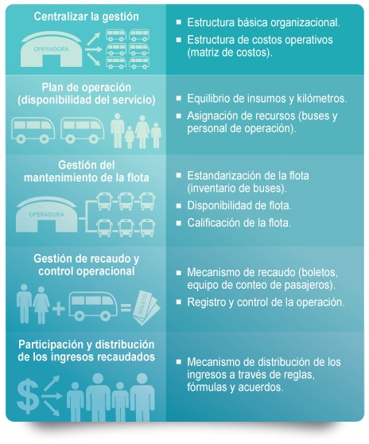

Caja Comun
Este sistema busca hacer distinta la prestación del servicio, donde cada dueño lleva su
responsabilidad de producir su unidad de transporte basándose mediante
la Caja Común como un mecanismo para mejorar el transporte, en donde lo que se produce
en el día se reparta equitativamente entre los socios o accionistas de las operadoras.
Es importante recalcar que la Caja Común es una de las herramientas que ayuda de una manera
eficaz
gestionar el transporte público ya que va a ser un instrumento adecuado para la toma de
decisiones y
a
su vez mejorar los ingresos y las condiciones de trabajo para así mejorar el servicio y
disminuir
las
competencias con otras operadoras por los pasajeros.

ventajas
La caja común es una manera de gestionar el transporte público que, al tener principios de
gestión
empresarial, resulta efectiva y conveniente: mejora el ingreso de los operadores y las
condiciones
de
trabajo, logra eficiencia en el servicio, disminuye los costos de operación y las disputas por
rutas
y
pasajeros.
Como consecuencia de aplicar la caja común, el servicio mejora y, por lo tanto, los usuarios se
sienten
más satisfechos y motivamos a usarlo. Además, favorece la planificación de redes de transporte
para
que
más pasajeros sean movilizados, es decir, posibilitan una mejor planificación del Sistema
Metropolitano
de Transporte.
desventajas
La resistencia al cambio por parte de los socios y conductores
Incertidumbre por el destino de los recursos económicos entregados
Desconocimiento de nuevo método de recaudación